Aria de servicii și competitorii
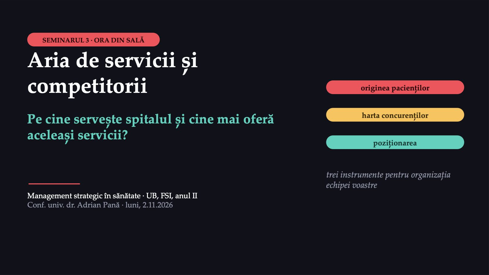
1 / 31Acesta este al treilea dintre cele șapte seminarii ale disciplinei. Seminarul are două ore: o oră în sală, cu toată grupa, și o oră de lucru al echipei, pe care o puteți face acasă.
Ce faceți azi și ce predați la sfârșit
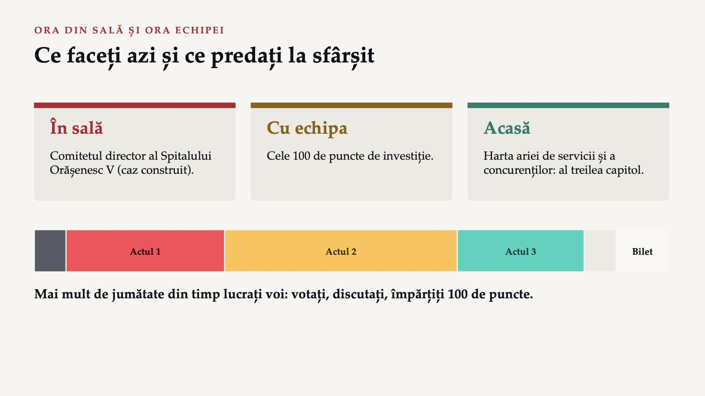
2 / 31În ora din sală deveniți, pentru o oră, comitetul director al unui spital orășenesc construit pentru exercițiu, Spitalul Orășenesc V, și răspundeți la trei întrebări pe care și le pune orice conducere înainte să scrie planul de dezvoltare: de unde vin, de fapt, pacienții noștri, cine mai oferă aceleași servicii acelorași oameni și unde ne putem așeza ca să fim de folos. Ora din sală urmează un singur caz, în trei acte, și mai mult de jumătate din timp lucrați voi: votați singuri, discutați cu colegul de bancă, votați din nou și împărțiți, ca echipă, cele 100 de puncte. În ora echipei, desenați harta ariei de servicii și a concurenților organizației voastre, al treilea capitol al planului strategic.
Spitalul Orășenesc V
 3 / 31
3 / 31Spitalul Orășenesc V este un spital public mic, într-un oraș dintr-un județ de câmpie, Județul N. Orașul are 15 000 de locuitori, iar împreună cu comunele din jur, aproximativ 40 000. Spitalul are 110 paturi. Comitetul director a primit sarcina să scrie primul capitol al planului de dezvoltare: pe cine servește spitalul și cine mai oferă aceleași servicii. La prima ședință, directorul medical aduce o hartă a județului și un compas: „Tragem un cerc în jurul orașului și am terminat.” Directorul financiar propune altceva: „Luăm orașul și comunele din jur, cum sunt ele împărțite administrativ.” Asistenta-șefă spune că știe din tură că mulți pacienți vin de peste râu, din comune care țin de alt oraș. Spitalul Orășenesc V nu este Spitalul Orășenesc Zimnicea din exemplul real de la sfârșitul seminarului.
După ce criteriu trasează comitetul granița ariei de servicii?
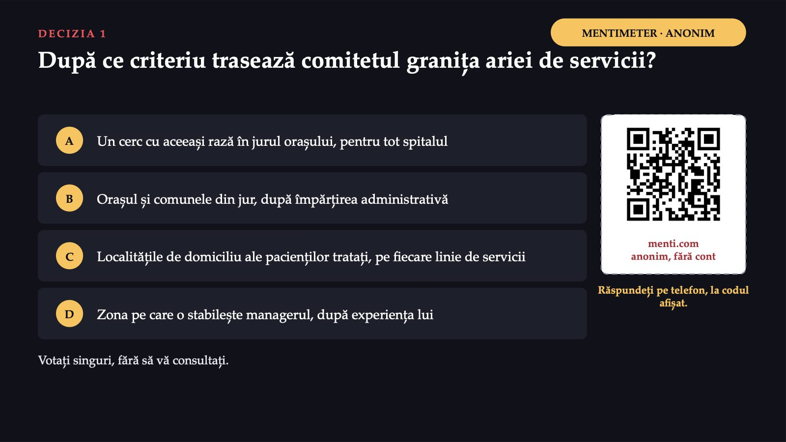
4 / 31Comitetul are, de fapt, o întrebare de metodă: după ce criteriu se trasează granița ariei de servicii? Votați singuri pe telefon, prin codul QR de pe ecran, fără să vă consultați. Variantele: A, „un cerc cu aceeași rază în jurul orașului, pentru tot spitalul”; B, „orașul și comunele din jur, după împărțirea administrativă”; C, „localitățile de domiciliu ale pacienților tratați, pe fiecare linie de servicii”; D, „zona pe care o stabilește managerul, după experiența lui”. Rezultatele nu apar pe ecran.
Convingeți-l pe colegul care a votat altfel
5 / 31Discutați apoi două minute cu colegul de bancă și încercați să-l convingeți pe cel care a votat altfel. Votați din nou; pe ecran apar ambele distribuții, una lângă alta.
Granița se trasează după pacienții tratați
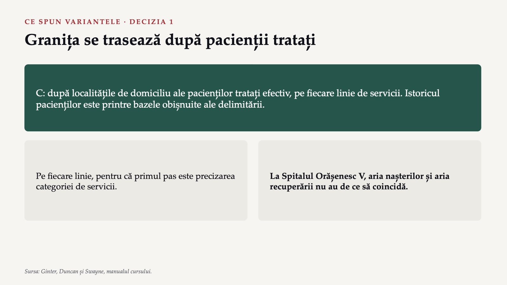
6 / 31Varianta C este cea pe care o susțin sursele cursului. Granița se trasează după localitățile de domiciliu ale pacienților tratați efectiv, adică după istoricul pacienților, pe care manualul îl numește printre bazele obișnuite ale delimitării. Iar delimitarea se face pe fiecare linie de servicii, pentru că primul pas al analizei este precizarea categoriei de servicii, iar categorii diferite pot avea arii foarte diferite. La Spitalul Orășenesc V, aria nașterilor și aria recuperării nu au de ce să coincidă.
De ce nu A, B sau D
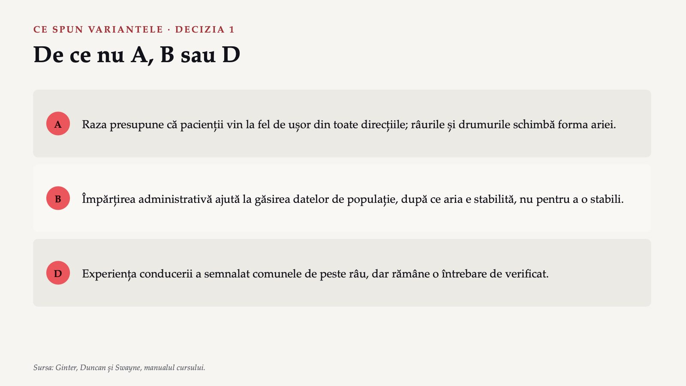
7 / 31Varianta A, cercul cu aceeași rază pentru tot spitalul, presupune că pacienții vin la fel de ușor din toate direcțiile, dar manualul observă că obstacolele geografice, cum sunt râurile, munții și drumurile cu acces limitat, schimbă forma ariei de servicii. Varianta B, împărțirea administrativă, are un avantaj real: datele publice despre populație se publică pe județe și pe localități. Împărțirea administrativă rămâne utilă pentru a găsi date despre populație, după ce ați stabilit aria, nu pentru a o stabili. Varianta D, zona stabilită de manager după experiența lui, nu este greșită ca punct de plecare: experiența directorilor și a asistentei-șefe a semnalat comunele de peste râu. Dar impresia conducerii devine o întrebare de verificat.
Originea pacienților
 8 / 31
8 / 31Originea pacienților este lista localităților de domiciliu ale pacienților tratați de o organizație, pe o linie de servicii și într-o perioadă anume, cu numărul de pacienți din fiecare. În limbaj de zi cu zi: „de unde vin oamenii care chiar ne trec pragul”. La internarea de zi pentru boli cronice, 85 de pacienți din 100 vin din oraș și din comunele vecine, iar 15 de peste râu. La recuperarea medicală, 60 de pacienți din 100 vin din oraș și din comunele vecine, 25 de peste râu și 15 din satele de la 30–45 de kilometri, pentru că în această parte a județului nu există alt serviciu de recuperare. Aria recuperării este, așadar, de aproape două ori mai mare decât a internării de zi. Valorile sunt ipotetice.
Determinanții ariei de servicii
![DE CE ALEGE PACIENTUL ALT FURNIZOR Determinanții ariei de servicii DE PARTEA PACIENTULUI nevoia · frecvența · preferințele · imaginea · valorile · experiențele trecute · starea de sănătate DE PARTEA FURNIZORILOR drumul · programul · prețul · imaginea · serviciile oferite · așteptarea · informația La operațiile complicate, concurentul poate fi centrul universitar din orașul M. Echipele lucrează pe date publice: aproximează aria și scriu ce date lipsesc. Sursa: Ginter, Duncan și Swayne, manualul cursului.](diapozitive/LP03/009.jpg) 9 / 31
9 / 31Aria de servicii nu este numai geografie. Manualul arată, într-o schemă, ce determină aria de servicii, în două grupe. De partea pacientului: tipul serviciului de care are nevoie, cât de des îl folosește, preferința pentru anumiți furnizori, imaginea pe care o caută, valorile lui, experiențele trecute și starea lui de sănătate. De partea pieței și a organizației: localizarea, comoditatea, nivelul prețului, imaginea, serviciile disponibile, felul în care este servit pacientul, inclusiv timpul de așteptare, și calitatea informației pe care o primește. Pentru Spitalul Orășenesc V, concurentul unei linii nu este, așadar, doar furnizorul cel mai apropiat. La operațiile mai complicate, concurentul poate fi chiar centrul universitar din orașul mare M, dacă pacienții cred că acolo se operează mai bine.
Spitalul Orășenesc V, o lună mai târziu
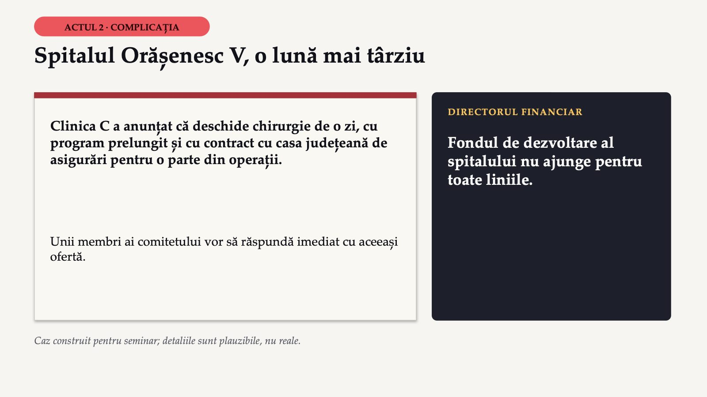
10 / 31Comitetul a cerut datele despre originea pacienților pe fiecare linie, iar tabloul s-a schimbat. Apoi a venit o veste: Clinica C a anunțat că deschide chirurgie de o zi, cu program prelungit și cu contract cu casa județeană de asigurări pentru o parte din operații. Directorul financiar spune că fondul de dezvoltare al spitalului nu ajunge pentru toate liniile. Unii membri ai comitetului vor să răspundă imediat cu aceeași ofertă. Este un caz construit pentru seminar.
Cine mai oferă aceeași linie, pe fiecare linie
![HARTA CONCURENȚILOR · CAZ CONSTRUIT Cine mai oferă aceeași linie, pe fiecare linie Linia · Concurenții în arie · Înlocuitorii · Partenerii posibili Nașterile · spitalul județean, cu terapie intensivă pentru nou-născuți · nu există · spitalul județean Chirurgia de o zi · Clinica C; spitalul municipal · internarea clasică · medicii de familie Internarea de zi pentru boli cronice · niciun furnizor apropiat · ambulatoriul · medicii de familie Recuperarea medicală · niciunul în partea de sud a județului · cabinetele de kinetoterapie · spitalul județean Consultațiile de control la distanță · nimeni, încă · drumul la spital · medicii de familie Pe două linii are concurenți reali. Pe celelalte trei, oamenii nu primesc serviciul sau fac drumuri lungi.](diapozitive/LP03/011.jpg) 11 / 31
11 / 31Comitetul face, pentru fiecare linie, o listă cu trei coloane: cine mai oferă aceeași linie pacienților din aria ei, ce alt serviciu poate rezolva aceeași nevoie altfel și cu cine ar avea sens să lucreze împreună. O organizație prezentă pe mai multe piețe poate avea alți concurenți pe fiecare dintre ele. Harta arată deja ceva ce lista directorului medical nu arăta. Pe două linii, nașterile și chirurgia de o zi, spitalul are concurenți reali, iar unul dintre ei este mai puternic pe factorul care contează cel mai mult pentru pacienți. Pe celelalte trei, nu are concurenți apropiați: acolo problema nu este concurența, ci faptul că oamenii din aria de servicii fie nu primesc serviciul, fie fac drumuri lungi pentru el.
8,6%
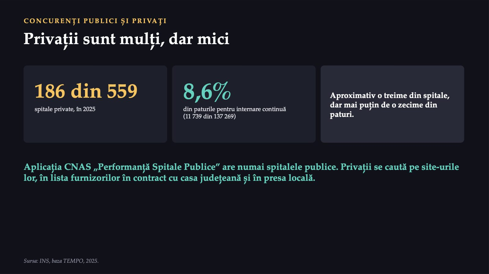
12 / 31În 2025, din cele 559 de spitale ale României, 186 erau private. Tot în 2025, spitalele private aveau 11 739 dintre cele 137 269 de paturi pentru internare continuă, adică 8,6%. Spitalele private reprezintă, așadar, aproximativ o treime din numărul spitalelor, dar mai puțin de o zecime din paturi. Un concurent privat mic poate fi foarte puternic pe o singură linie, cum este Clinica C pe chirurgia de o zi, fără să conteze pe celelalte. Aplicația „Performanță Spitale Publice” a casei naționale de asigurări conține numai spitalele publice. Concurenții privați se caută pe site-urile lor, în lista furnizorilor aflați în contract cu casa județeană de asigurări și în presa locală, iar ce nu se poate verifica se scrie ca atare.
Poziționarea: unde vă așezați pe hartă
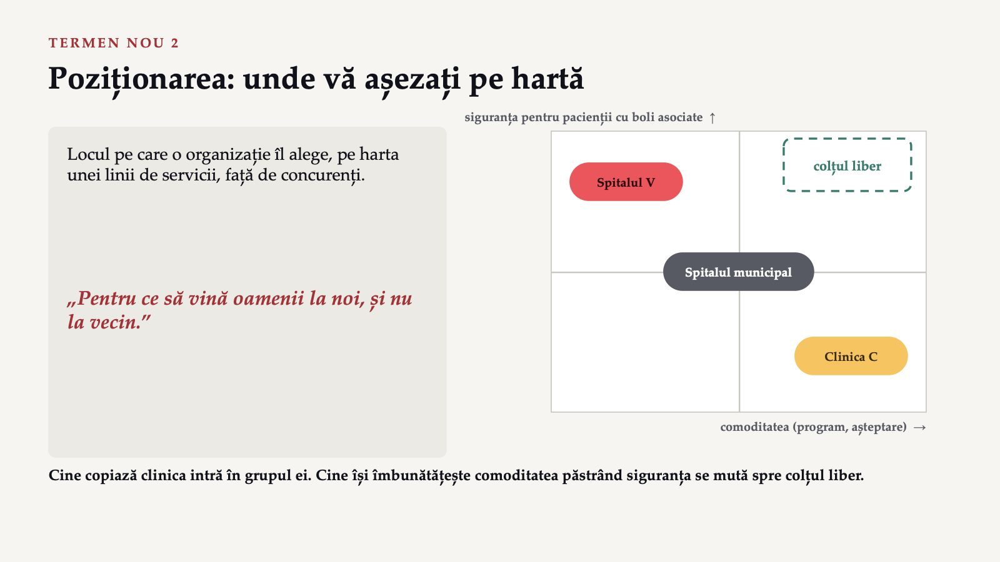
13 / 31Poziționarea este locul pe care o organizație îl alege, pe harta unei linii de servicii, față de concurenții ei. În limbaj de zi cu zi: „pentru ce să vină oamenii la noi, și nu la vecin”. Axele hărții sunt doi factori critici de succes ai chirurgiei de o zi, aleși de comitet: comoditatea și siguranța pentru pacienții cu boli asociate. Clinica C este sus pe comoditate și jos pe siguranță. Spitalul municipal este la mijloc pe amândouă. Spitalul Orășenesc V este jos pe comoditate și sus pe siguranță. Colțul cu comoditate mare și siguranță mare este liber. Un spital care copiază întocmai oferta Clinicii C intră în grupul ei, unde clinica a ajuns prima. Un spital care își îmbunătățește comoditatea păstrând siguranța se mută spre colțul liber, unde nu are încă un rival.
Ce propune comitetul pentru chirurgia de o zi?
 14 / 31
14 / 31Votați singuri pe telefon: Clinica C deschide chirurgie de o zi. Ce propune comitetul pentru linia de chirurgie de o zi a Spitalului Orășenesc V? Variantele: A, „aceeași ofertă ca a clinicii: aceleași operații, același program”; B, „renunțăm la chirurgia de o zi și lăsăm linia clinicii”; C, „ne așezăm unde clinica nu poate ajunge: pacienții cu boli asociate, cu program mai bun și cu posibilitatea de a rămâne internați”; D, „o campanie de imagine în presa locală”. Rezultatele nu apar pe ecran.
Convingeți-l pe colegul care a votat altfel
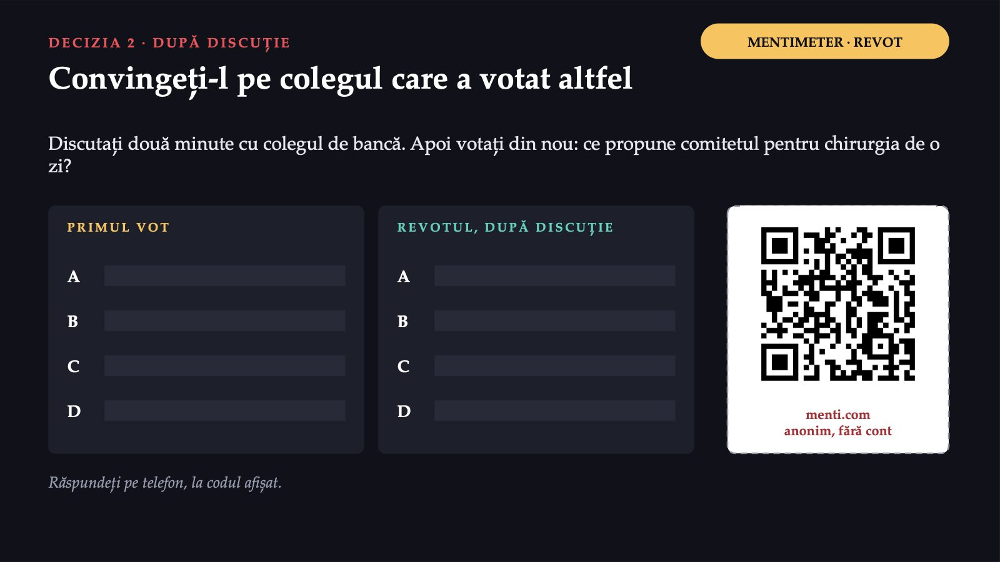
15 / 31Discutați două minute cu colegul de bancă, apoi votați din nou; pe ecran apar ambele distribuții.
Se așază unde clinica nu poate ajunge
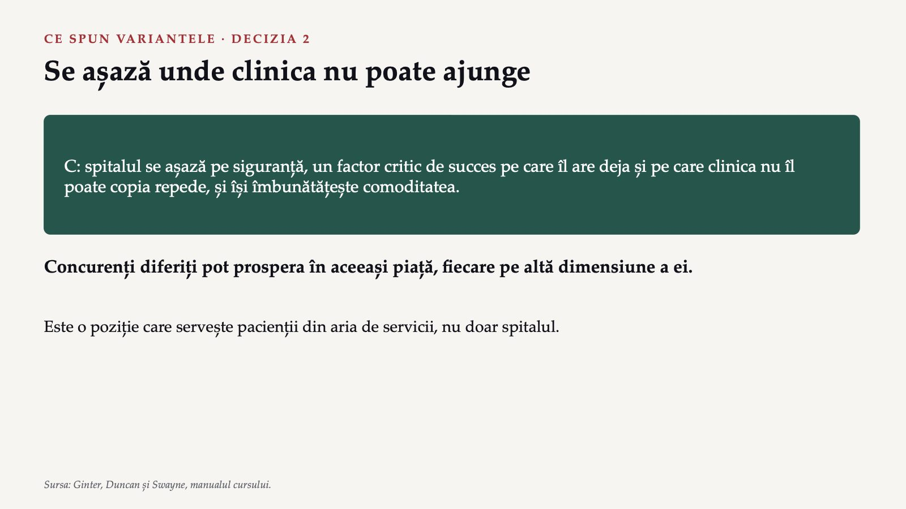
16 / 31Varianta C este cea pe care o susține harta. Spitalul se așază pe un factor critic de succes pe care îl are deja și pe care concurentul nu îl poate copia repede, siguranța, și își îmbunătățește factorul la care rămâne în urmă, comoditatea. Concurenți diferiți pot prospera în aceeași piață, fiecare pe altă dimensiune a ei. Este, totodată, o poziție care servește pacienții din aria de servicii, nu doar spitalul.
De ce nu A, B sau D
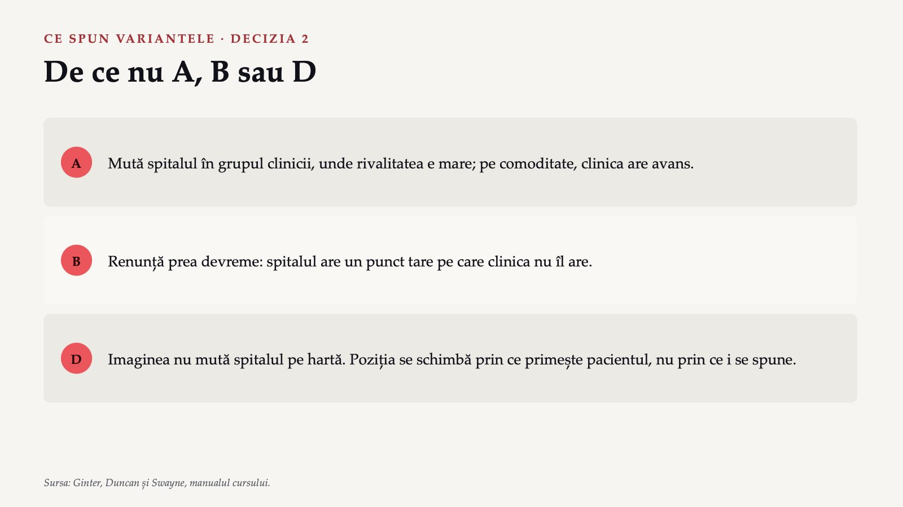
17 / 31Varianta A pare cea mai prudentă, dar mută spitalul în grupul strategic al clinicii, unde rivalitatea este cea mai mare, pentru că rivalitatea crește cu cât concurenții seamănă mai mult. Pe comoditate și pe program, clinica are deja un avans. Varianta B renunță prea devreme. O retragere se poate discuta abia după analiza internă, din seminarul următor, nu înaintea ei. Varianta D confundă imaginea cu poziția. O campanie care nu schimbă nimic din programul și din așteptarea pacienților nu mută spitalul pe hartă. Poziția se schimbă prin ce primește pacientul, nu prin ce i se spune despre spital.
Ce aduce fiecare punct
![CELE 100 DE PUNCTE · REGULILE CAZULUI Ce aduce fiecare punct Linia · Pacienți la miză · Pe punct · Plafon · Anul 3 Nașteri · 150 · 3 · 60 · 60% Chirurgie de o zi · 900 · 20 · 400 · 50% Internare de zi pentru boli cronice · 1 500 · 40 · 1 200 · 90% Recuperare medicală · 800 · 20 · 700 · 90% Consultații de control la distanță · 1 000 · 30 · 600 · 80% La nașteri, majoritatea mamelor aleg spitalul județean: un punct aduce doar 3 nașteri, iar plafonul e 60. Valori ipotetice. Pacienți pe an; „Anul 3”: cât rămâne din câștigul primului an.](diapozitive/LP03/018.jpg) 18 / 31
18 / 31Urmările nu se ghicesc: ele sunt calculate dinainte, după câteva reguli construite pentru seminar. Pe fiecare linie, fiecare punct investit aduce un număr de pacienți serviți în plus pe an, dar numai până la un plafon, peste care punctele nu mai aduc nimic. La nașteri sunt în joc 150 de nașteri pe an ale mamelor din aria de servicii, dar majoritatea mamelor aleg spitalul județean, care are terapie intensivă pentru nou-născuți. De aceea, fiecare punct aduce doar 3 nașteri în plus, iar plafonul este de 60. Ultima coloană arată cât din câștigul primului an se păstrează în al treilea: la chirurgia de o zi doar jumătate, pentru că, în modelul construit, Clinica C răspunde.
Împărțiți fondul de dezvoltare
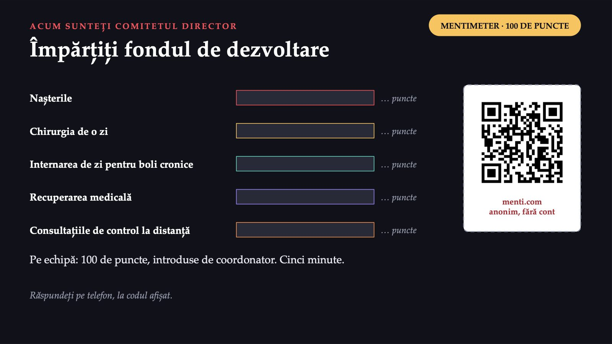
19 / 31Comitetul are de împărțit fondul de dezvoltare între cele cinci linii de servicii. Acum o faceți voi, ca echipă. Fiecare echipă primește 100 de puncte de investiție și le împarte între cele cinci linii de servicii ale Spitalului Orășenesc V: nașterile, chirurgia de o zi, internarea de zi pentru boli cronice, recuperarea medicală și consultațiile de control la distanță. Coordonatorul introduce alocarea echipei pe Mentimeter. Aveți cinci minute și harta concurenților din tabelul de mai sus.
Ce urmează după fiecare alocare
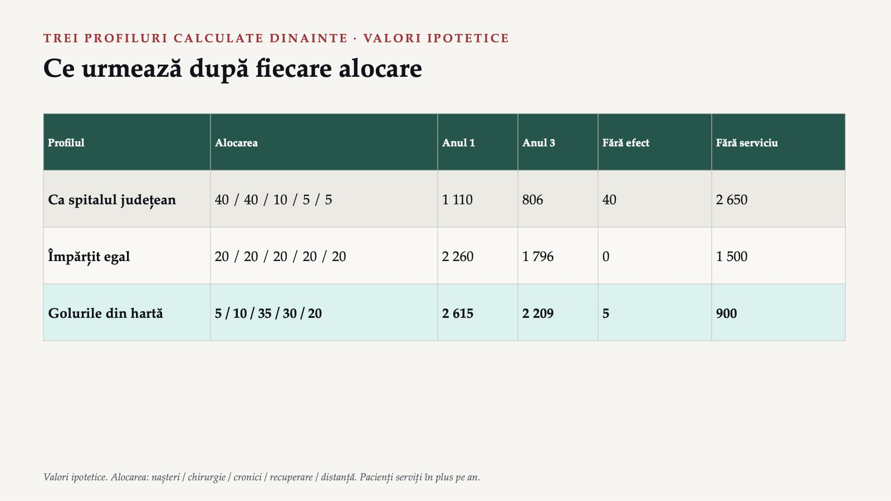
20 / 31Profilul „ca spitalul județean” pune banii pe liniile pe care spitalul are concurenți puternici, nașterile și chirurgia de o zi. Rezultatul este cel mai slab: jumătate din puncte nu au niciun efect în modelul construit, iar pe liniile fără alt furnizor rămân cei mai mulți pacienți fără serviciu aproape. Profilul „împărțit egal” pare corect față de toate secțiile, dar nu ține seama de hartă. Profilul „golurile din hartă” pune cele mai multe puncte acolo unde nu există alt furnizor și servește cei mai mulți pacienți, în anul 1 și în anul 3.
1 510
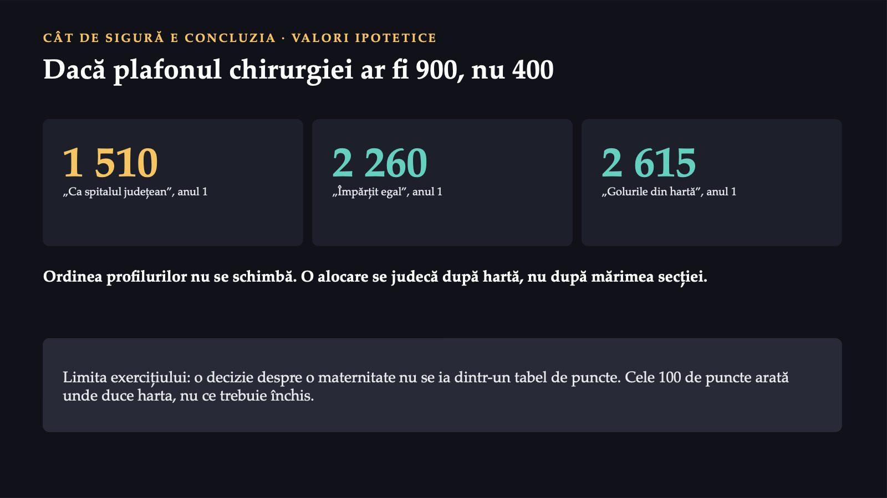
21 / 31Toate cifrele din tabelele de mai sus vin din reguli construite pentru seminar. Dacă plafonul chirurgiei de o zi ar fi de 900 de pacienți în loc de 400, profilul „ca spitalul județean” ar urca în anul 1 de la 1 110 la 1 510 pacienți serviți în plus. Ar rămâne tot sub „împărțit egal” (2 260) și sub „golurile din hartă” (2 615), deci ordinea profilurilor nu se schimbă. Exercițiul are și o limită. În realitate, o decizie despre o maternitate are urmări pentru siguranța mamelor din aria de servicii, pentru personal și pentru comunitate, iar ea nu se ia dintr-un tabel de puncte. Cele 100 de puncte arată unde duce harta, nu ce trebuie închis.
Spitalul Orășenesc V, după un an
 22 / 31
22 / 31Comitetul a ales o alocare apropiată de profilul „golurile din hartă”. Internarea de zi pentru boli cronice a crescut repede, iar medicii de familie din comune au început să trimită pacienți cu un bilet care spune ce trebuie verificat. Consultațiile de control la distanță au pornit mai greu decât se aștepta: mulți pacienți vârstnici nu aveau telefon potrivit, iar spitalul a lucrat cu medicii de familie, care au făcut legătura din cabinet. Recuperarea a rămas sub plafon: fondul a ajuns pentru sală și aparate, dar spitalul a găsit greu kinetoterapeuți. Pe chirurgia de o zi, spitalul a introdus un program de după-amiază pentru operațiile mici și a păstrat pacienții cu boli asociate; Clinica C a luat o parte din pacienții tineri și sănătoși. Caz construit pentru seminar; deznodământul este plauzibil, nu real.
O linie fără concurenți e greu de pornit
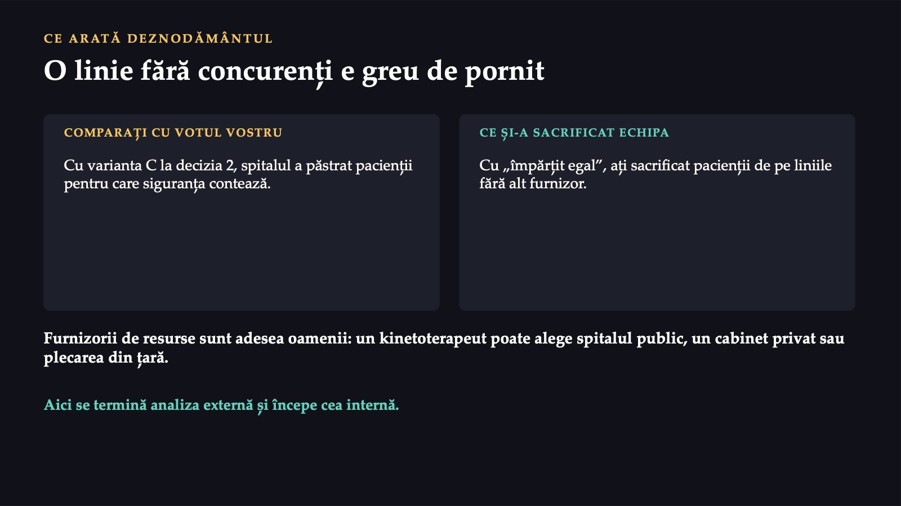
23 / 31Comparați deznodământul cu votul vostru. Dacă ați ales, la a doua decizie, varianta C, ați avut dreptate în direcție: spitalul nu a câștigat bătălia pe comoditate cu clinica, dar a păstrat pacienții pentru care siguranța contează. Dacă alocarea medie a echipelor a fost aproape de „împărțit egal”, ce ați sacrificat fără să vă dați seama sunt pacienții de pe liniile fără alt furnizor. Recuperarea arată o lecție pe care harta concurenților nu o poate da singură. Cursul de săptămâna trecută a numit, printre cele cinci presiuni asupra unei linii de servicii, puterea celor care furnizează resursele. În sănătate, acești furnizori sunt adesea oamenii: un kinetoterapeut poate alege între spitalul public, un cabinet privat sau plecarea din țară. O linie fără concurenți poate fi o linie fără concurenți tocmai pentru că este greu de pornit. Aici se termină analiza externă și începe analiza internă.
O instituție publică unică: ce scrie echipa despre aria de servicii și competitori?
![MENTIMETER · ANONIM DECIZIA 3 O instituție publică unică: ce scrie echipa despre aria de servicii și competitori? A Nimic: capitolul nu se aplică unei instituții unice B Instituțiile de același fel din celelalte județe C Pentru fiecare serviciu al ei: de unde vin oamenii, cine îl mai oferă sau îl poate înlocui, cine îi este partener D Concurenții la nivel național ai sistemului public Răspundeți pe telefon, la codul afișat. Un singur vot, fără revot. „Organizația noastră nu are concurenți.” menti.com anonim, fără cont](diapozitive/LP03/024.jpg) 24 / 31
24 / 31Caz construit pentru seminar. Una dintre echipe a ales o instituție publică unică în județul ei, care oferă mai multe servicii populației, de la consiliere la analize de laborator și programe de prevenție. Echipa spune: „Organizația noastră nu are concurenți. Ce scriem în capitolul despre aria de servicii și competitori?” Votați o singură dată pe telefon: ce scrie echipa în capitolul despre aria de servicii și competitori? Variantele: A, „nimic: capitolul nu se aplică unei instituții unice”; B, „instituțiile de același fel din celelalte județe”; C, „pentru fiecare serviciu al ei: de unde vin oamenii, cine le mai oferă același serviciu sau unul care îl poate înlocui și cine îi este partener”; D, „concurenții la nivel național ai sistemului public”.
Fiecare serviciu are aria lui
![CE SPUN VARIANTELE · DECIZIA 3 Fiecare serviciu are aria lui C: o instituție publică unică are mai multe servicii, fiecare cu aria lui. Unde nu există concurenți sau înlocuitori, capitolul arată partenerii și pacienții care nu primesc serviciul. A Lipsa unui rival nu înseamnă lipsa unei arii de servicii. B Instituțiile din alte județe nu servesc aceiași oameni: compară rezultate, nu concurență. D Mută analiza la nivelul sistemului, unde nu mai ajută nicio decizie. Sursa: Ginter, Duncan și Swayne, manualul cursului.](diapozitive/LP03/025.jpg) 25 / 31
25 / 31O organizație prezentă pe mai multe piețe poate avea alți concurenți pe fiecare dintre ele, iar o instituție publică unică are și ea mai multe „piețe”, adică mai multe servicii, fiecare cu aria lui. Pe unele servicii poate avea furnizori privați care oferă același lucru. Pe altele poate avea înlocuitori. Iar unde nu există nici concurenți, nici înlocuitori, capitolul arată partenerii și pacienții care nu primesc serviciul. Varianta A confundă lipsa unui rival cu lipsa unei arii de servicii. Varianta B descrie o comparație utilă, dar nu una de concurență. Varianta D mută analiza la nivelul sistemului, unde ea nu mai ajută nicio decizie a organizației.
Harta ariei de servicii a organizației voastre
![ORA ECHIPEI, ACASĂ Harta ariei de servicii a organizației voastre 1 Porniți de la fișa organizației. 2 Cel puțin trei linii de servicii, definite. 3 Aria fiecărei linii, argumentată. 4 Concurenți, înlocuitori, parteneri. 5 Harta de poziționare, cu două axe. 6 Coordonatorul trimite formularul. TERMENUL duminică 15.11.2026, ora 22:00 un formular pe echipă 0, 1 sau 2 puncte 2: trei linii, hartă de poziționare, surse cu anul. 1: la termen, dar incompletă. 0: nepredată sau fără surse. Obligatoriu: „Ce a făcut fiecare membru al echipei”.](diapozitive/LP03/026.jpg) 26 / 31
26 / 31Ora echipei produce al treilea capitol al planului strategic: harta ariei de servicii și a concurenților organizației voastre. Produsul se notează cu 0, 1 sau 2 puncte și intră în nota pentru produsele seminariilor. Primește 2 puncte harta care acoperă cel puțin trei linii de servicii, fiecare cu aria aproximată și argumentată, cu concurenții publici și privați sau cu căutarea documentată, cu înlocuitorii și partenerii, și care are o hartă de poziționare cu două axe și o concluzie despre poziția organizației, cu sursele și anul de referință. Primește 1 punct harta predată la termen, dar cu mai puțin de trei linii sau fără hartă de poziționare, iar 0 puncte harta nepredată sau fără surse. Lucrați împreună, în aceeași cameră sau într-o întâlnire pe Teams, și trimiteți un singur formular pe echipă, prin coordonator. Formularul are un câmp obligatoriu, „Ce a făcut fiecare membru al echipei”.
Formularul „Aria de servicii”
![PREDAREA Formularul „Aria de servicii” 1 Numele echipei, coordonatorul și ce a făcut fiecare membru. 2 Cel puțin trei linii de servicii, cu definiția fiecăreia. 3 Aria fiecărei linii, cu argumentul și datele care lipsesc. 4 Concurenții (cu sursa), înlocuitorii, partenerii sau căutarea documentată. 5 Harta de poziționare, cu cele două axe și concluzia. 6 Lista surselor și declarația despre inteligența artificială. Se deschide cu contul instituțional al Universității din București. Un singur formular pe echipă, trimis de coordonator până duminică, 15.11.2026, ora 22:00. Formularul „Aria de servicii”](diapozitive/LP03/027.jpg) 27 / 31
27 / 31Harta ariei de servicii se predă în formularul „Aria de servicii”, un singur formular pe echipă, trimis de coordonator până duminică, 15.11.2026, ora 22:00. Formularul cere numele echipei, coordonatorul și ce a făcut fiecare membru al echipei; cel puțin trei linii de servicii, fiecare cu definiția ei; pentru fiecare linie, aria de servicii aproximată, cu argumentul și cu datele care ar lipsi; concurenții publici și privați, înlocuitorii și partenerii, sau căutarea documentată; harta de poziționare pentru linia cea mai disputată; lista surselor; declarația despre instrumentele de inteligență artificială. Formularul se deschide cu contul instituțional al Universității din București.
Teleorman: ce arată tabelul și ce nu arată
![PENTRU ACASĂ · EXEMPLU REAL Teleorman: ce arată tabelul și ce nu arată Spitalul (2025) · Acuți · Cronici · Zi · Total Spitalul Județean de Urgență Alexandria · 482 · 139 · 30 · 651 Spitalul Municipal Turnu Măgurele · 124 · 45 · 17 · 186 Spitalul Municipal „Caritas” Roșiori de Vede · 179 · 42 · 20 · 241 Spitalul Orășenesc Zimnicea · 96 · 20 · 10 · 126 Spitalul de Pneumoftiziologie Roșiori de Vede · 85 · 32 · 10 · 127 Spitalul de Psihiatrie Poroschia · 104 · 41 · 0 · 145 Paturi contractate Nu toate sunt concurenți. Două sunt de specialitate. Contractate nu înseamnă toate. Cele aprobate sunt mai multe. Nu arată de unde vin pacienții. Privații lipsesc. Sursa: CNAS, „Performanță Spitale Publice”, 2025.](diapozitive/LP03/028.jpg) 28 / 31
28 / 31Aplicația „Performanță Spitale Publice” a casei naționale de asigurări are, pentru județul Teleorman, șase spitale publice, cu paturile pe care fiecare le-a contractat cu casa de asigurări în 2025. Primul lucru pe care îl arată tabelul: nu toate cele șase spitale sunt concurenții spitalului din Zimnicea. Cele patru spitale generale au împreună, în 2025, 881 de paturi de acuți contractate, iar spitalul județean din Alexandria are 54,7% dintre ele, iar cel din Zimnicea 10,9%. Al doilea lucru: paturile contractate nu sunt toate paturile. Cele șase spitale au, în 2025, 1 765 de paturi aprobate și 1 476 contractate cu casa de asigurări, adică 83,6%. Al treilea lucru, cel mai important: tabelul nu arată de unde vin pacienții. Aplicația conține numai spitalele publice, deci concurenții privați lipsesc din tabel.
Unde găsiți date publice
 29 / 31
29 / 31Pentru proiectul vostru, câteva surse acoperă cea mai mare parte a hărții. Aplicația „Performanță Spitale Publice” a casei naționale de asigurări dă, pentru fiecare spital public, paturile, cazurile, durata internărilor și complexitatea cazurilor. Institutul Național de Statistică publică, în baza de date TEMPO, unitățile sanitare pe categorii și forme de proprietate. Lista furnizorilor aflați în contract cu casa județeană de asigurări arată cine mai oferă, în județ, servicii decontate de casă, inclusiv furnizorii privați. Site-urile organizațiilor arată serviciile oferite și, uneori, zona pe care o declară. Hărțile online cu trasee rutiere dau timpul de drum dintre localități. Orice cifră poartă sursa și anul de referință. Un instrument de inteligență artificială nu este o sursă de cifre: îl puteți folosi numai pentru redactare, cu declarație.
Ce luați cu voi din Spitalul Orășenesc V
![DE REȚINUT Ce luați cu voi din Spitalul Orășenesc V 1 Aria de servicii: zona în care serviciile se oferă și se primesc, iar concurența se identifică limpede. 2 Pacientul compară furnizorii după drum, program, așteptare, imagine și informație. 3 Spitalele private sunt multe, dar mici; nu apar în aplicația casei. 4 Concurenții se caută pe fiecare linie, în surse publice și private. 5 O hartă bună susține o decizie: unde vă așezați. De mâine, întrebați: pentru ce serviciu, după ce date și cine mai oferă același serviciu acelorași oameni?](diapozitive/LP03/030.jpg) 30 / 31
30 / 31Aria de servicii este zona în care serviciile se oferă și se primesc și în care concurența se poate identifica limpede. Pacientul compară furnizorii după drum, program, așteptare, imagine și informație, inclusiv cu furnizori mai îndepărtați pe care îi consideră mai buni. În România, spitalele private sunt multe, dar mici: aproximativ o treime din spitale și mai puțin de o zecime din paturile pentru internare continuă. Concurenții privați nu apar în aplicația publică a casei de asigurări pentru spitale; ei se caută în alte surse. O hartă a concurenților este bună dacă ajută la o decizie: unde se așază organizația și unde nu își pune resursele. De mâine, când auziți „spitalul nostru deservește județul” sau „nu avem concurenți”, întrebați trei lucruri: pentru ce serviciu, după ce date despre pacienți și cine mai oferă același serviciu acelorași oameni.
Trei întrebări pentru final
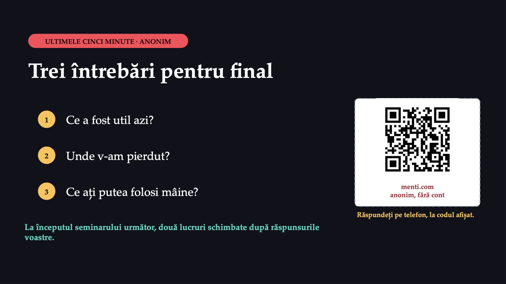
31 / 31Biletul de ieșire, anonim, pe Mentimeter, prin codul QR de pe ultimul diapozitiv. Trei întrebări deschise: „Ce a fost util?”, „Unde te-am pierdut?”, „Ce ai putea folosi mâine?”. La începutul seminarului următor, titularul arată două lucruri schimbate după răspunsurile voastre.
Săgeți sau spațiu: navigare · O: vedere de ansamblu · N: notele prezentatorului · F: ecran complet · Esc: închidere